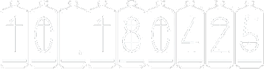

{{displayFormat(cat)}}
{{displayFormat(entry)}}
{{languageFormat(language)}}
{{displayFormat(entry)}}
{{displayFormat(cat)}}
{{item.content[lang].title}}
{{item.content[lang].description}}
Link
{{item.date.toISOString().substring(0, 10)}}